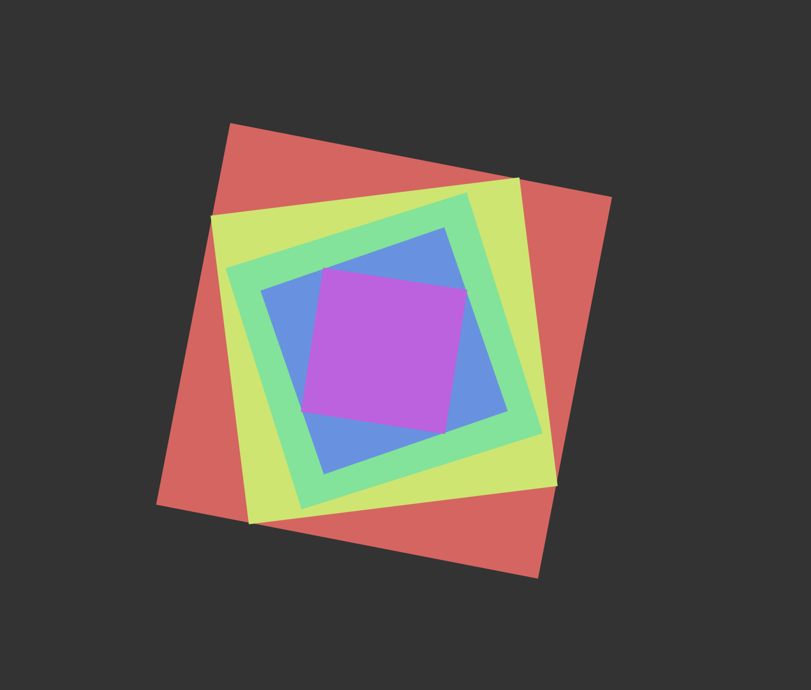
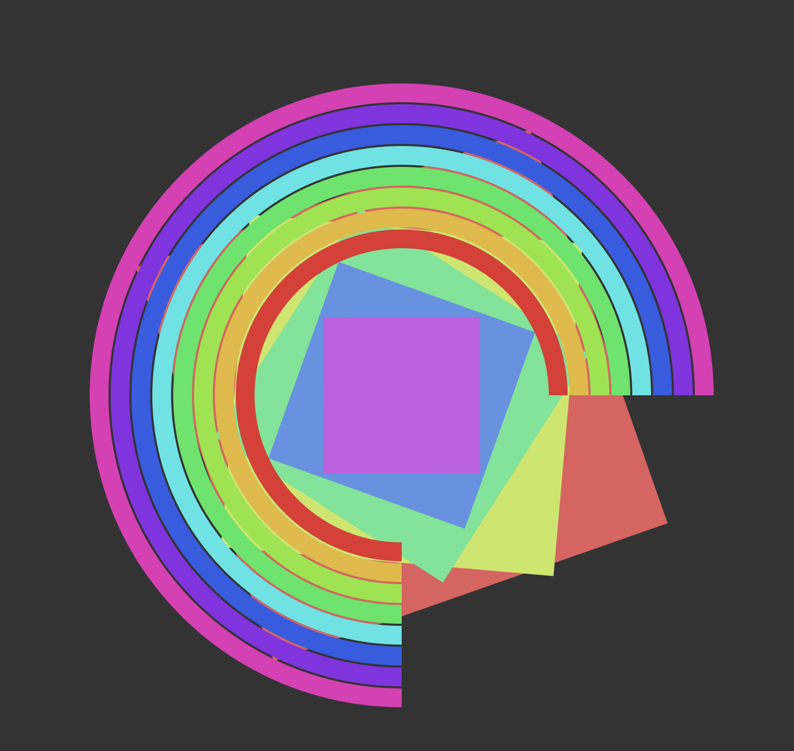
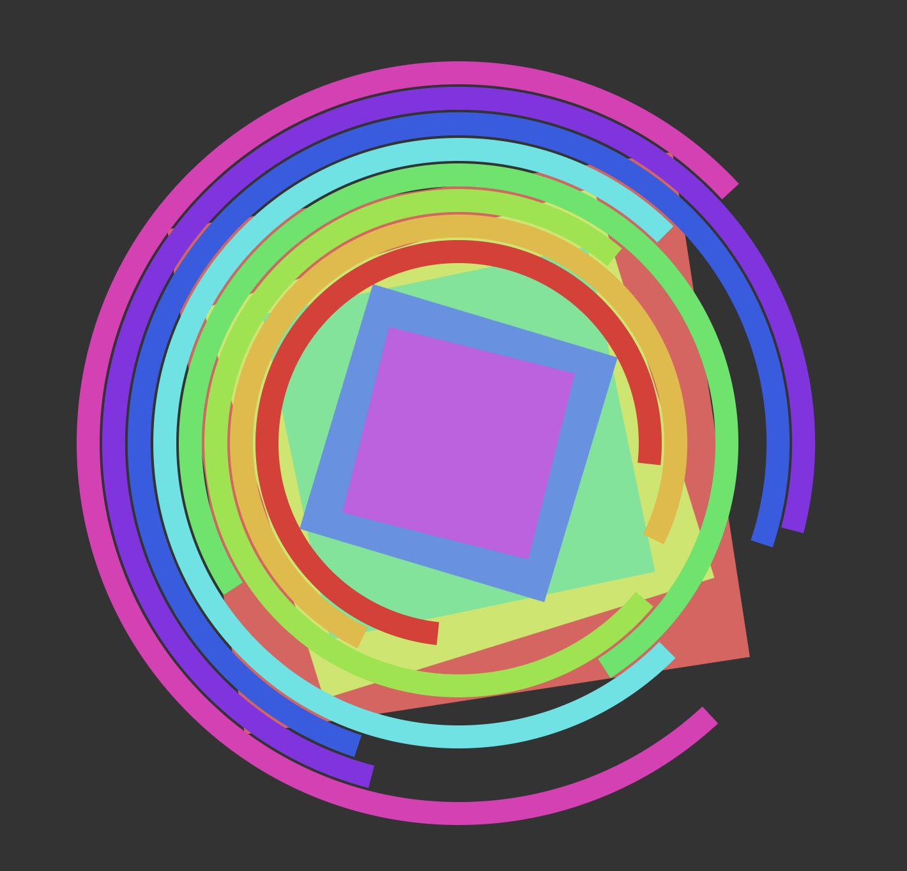

1. This is the initial experiment using only rotating squares. The movement is simple and continuous.

2. I adjusted the sizes and colors of the squares to explore visual balance and layering.
3. Variation was added to the rotation, creating more dynamic and less uniform movement between the squares.
4. Circular arcs were introduced as a second shape, while the squares remained the main focus.
5. More rings were added and animated, increasing the complexity and creating a stronger rhythm between shapes.

6. In the final version, both shapes move with different timing and speeds, forming a layered and de-synchronized motion.